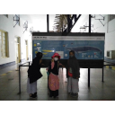

Galeri Sekolah


Rumbel HMQ merupakan sebuah lembaga pendidikan informal Setingkat SD di Depok
Daftar Sekarang
Pelaksanaan operasional Rumbel HMQ menginduk kepada PKBM Mandiri Annur yang beralamat di Jl. Grogol Raya No. 121 Kel. Grogol, Kec. Limo, Kota Depok (NPSN 9948117)
Saat ini kami belajar di rumah hasil wakaf muhsinin yang memiliki 3 ruangan berukuran sedang dan 1 ruang besar. Serta alat penunjang belajar lainnya berupa proyektor, tv dan jaringan internet nirkabel.
Pengajar di Rumah Belajar saat ini berjumlah 8 orang. Beberapa pengajar adalah sarjana lulusan perguruan tinggi negeri dan swasta (Universitas Padjajaran, Universitas Gunadharma, LIPIA), mahasiswa perguruan tinggi (Universitas Muhammadiyah Jakarta, Islamic Online University) dan lulusan Pondok Pesantren.
Durasi waktu belajar sehari 6 jam, dibagi menjadi 2 sesi waktu belajar
Kami menggabungkan Kurikulum Merdeka dari Diknas dengan pendekatan mandiri yang menekankan pembelajaran Al-Qur’an dan penguatan literasi dasar.
Isi formulir online atau datang langsung ke sekolah kami.
Formulir Pendaftaran
ğŸ“
Perumahan Sawangan Permai, Jl. Cucak rowo Blok F7 no.11, Pasir Putih, Sawangan, Depok
ğŸ“
089519191933 (Sudarmojo),
089656327095 (Herry),
089689418274 (Hanifah)